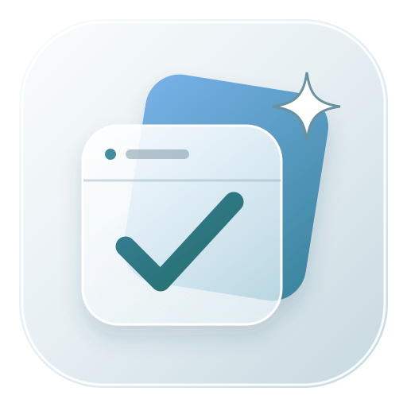
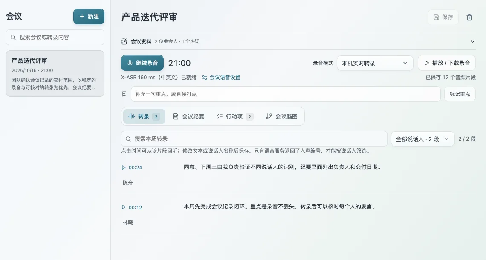

任务与日历
在四态看板推进任务，设置排期和到期提醒。支持只读接入钉钉日历与待办。

栖点PERCH在一个桌面应用里安排任务和日程、跟进禅道项目、处理邮件，再用 AI 和知识库辅助日常工作。
macOS Apple 芯片 · Windows x64 · 本地优先

在四态看板推进任务，设置排期和到期提醒。支持只读接入钉钉日历与待办。
同步参与的项目、负责的执行和指派给自己的 BUG。支持提交 BUG 和回写执行进度。
配置模型和 Agent，使用文字、图片和文档发起对话，查看回答引用。
集中打开常用应用，从一个界面收发多个邮箱的邮件。
查询汇率、换算多种货币、生成 2FA 验证码，也可以管理 NATAPP 隧道。
工作数据默认保存在本机，支持本地 ZIP 备份与 S3 定时备份。
以下功能自 0.2.0 起可用。
录音时用本机 X-ASR 实时转写中文和英文，停止录音后可区分说话人。支持选择和检测麦克风，也可配置转录 API。
配置文本模型后，可生成会议纪要、脑图和行动项，并将行动项转为任务。

从浏览器书签或 Excel 批量导入应用，按分类管理和收藏。共享链接可分组，并按创建人和日期筛选。
应用和服务器凭据分开管理，支持 Excel 导入、按需查看和复制。凭据加密保存在本机。
在「我的任务」切换看板、日历、列表和完成回顾。写邮件支持富文本正文。
NATAPP 可同步、配置和启动隧道。S3 滚动保留最近 10 份成功备份，语音模型文件独立保存。
用 1 分 45 秒了解任务、日历、AI 和数据备份。
示例数据录制，可选择章节跳转。
下载操作视频


界面使用演示数据。禅道、钉钉和 AI 等外部服务需在设置中连接。
免费开源，支持 macOS Apple 芯片和 Windows x64。